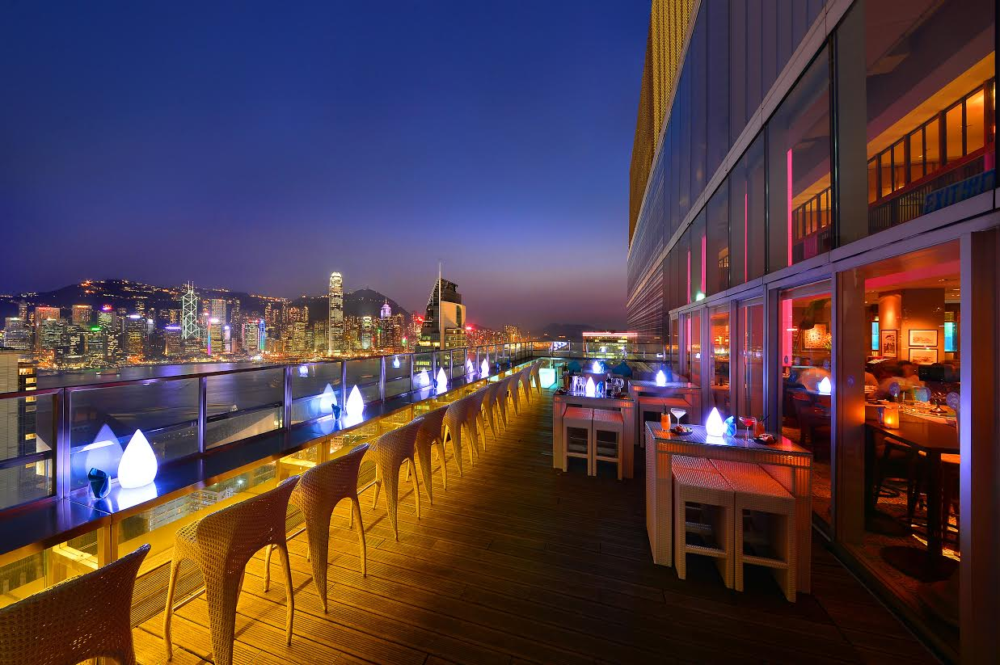
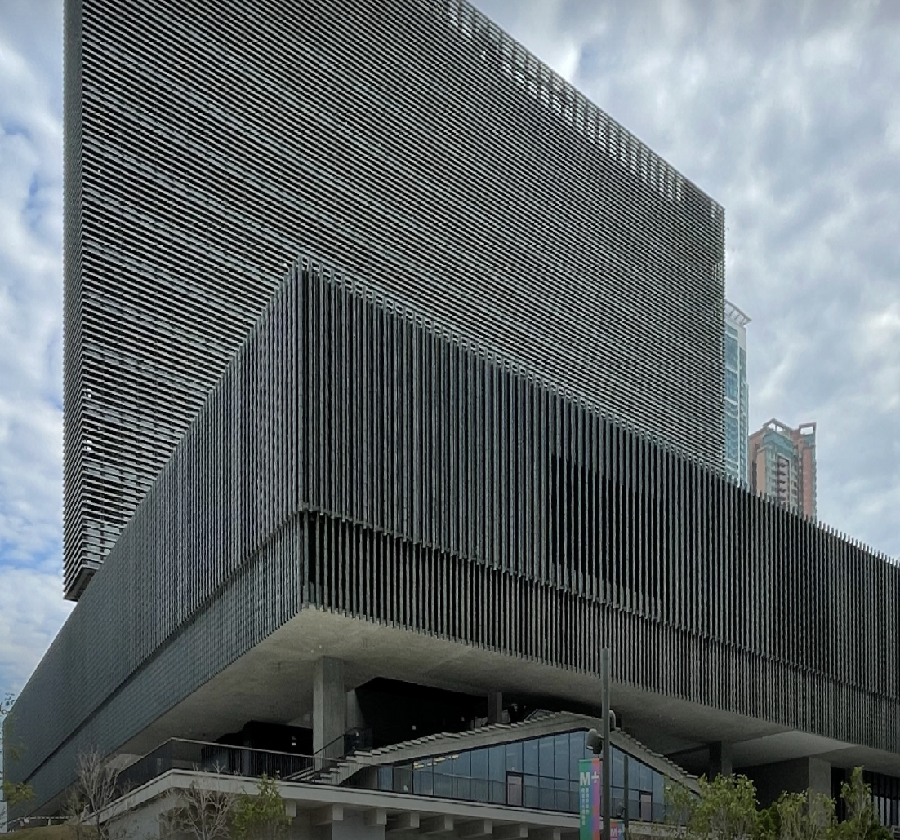
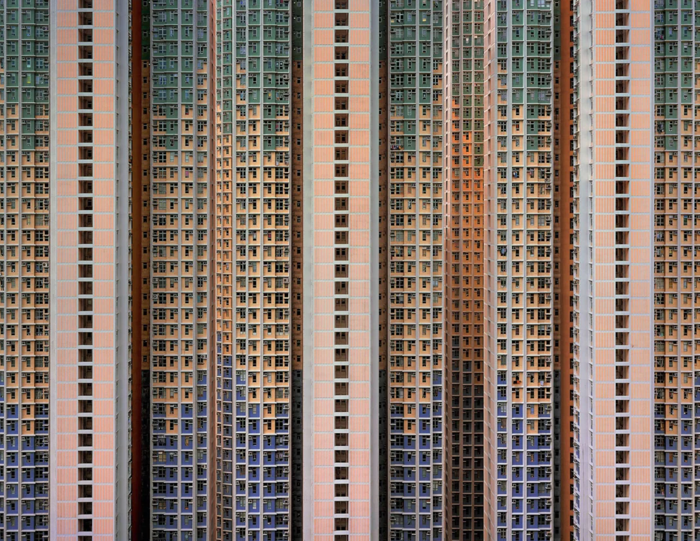
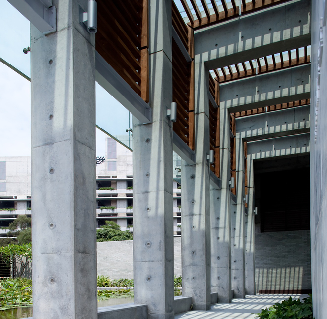
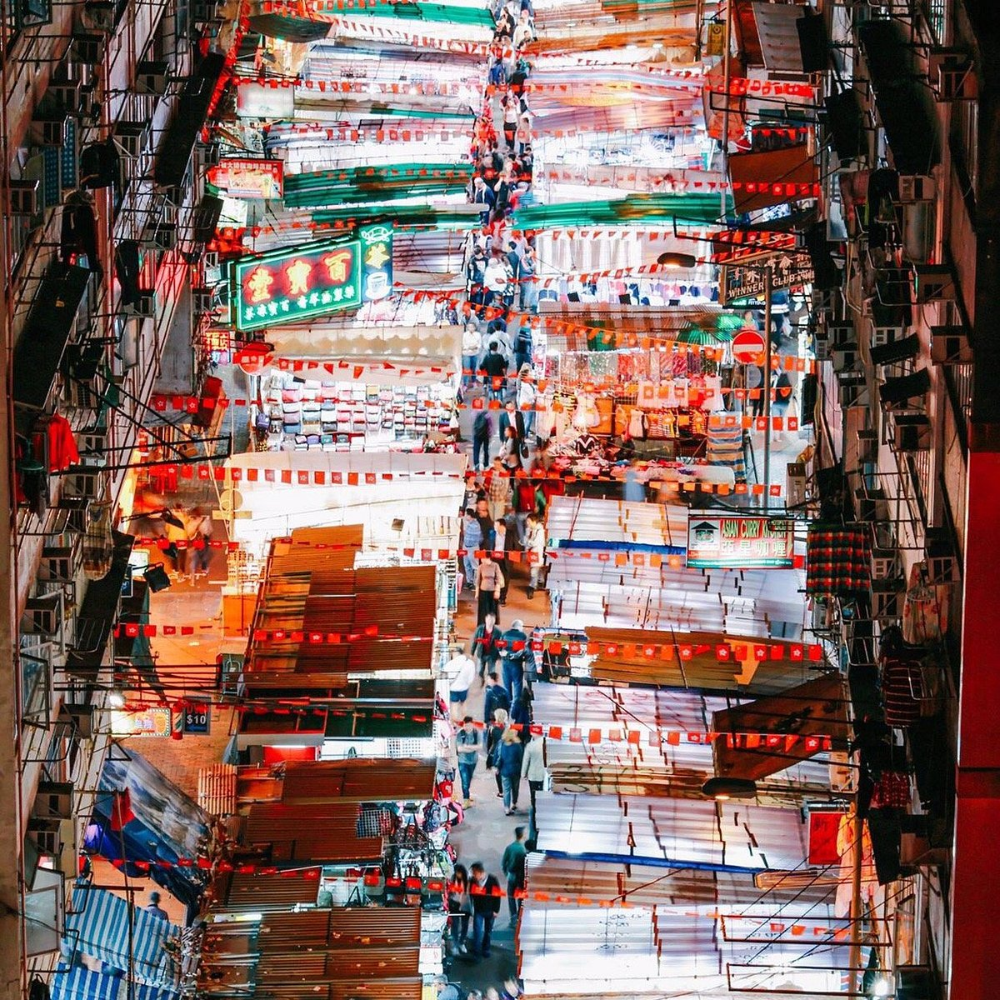
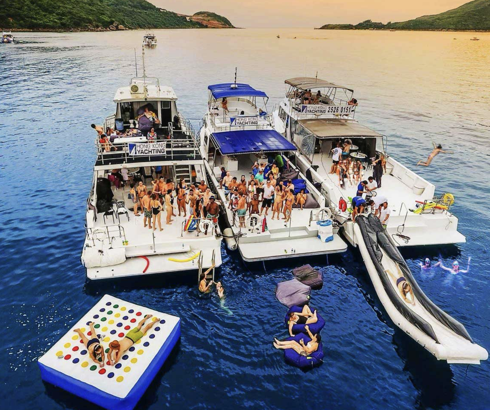
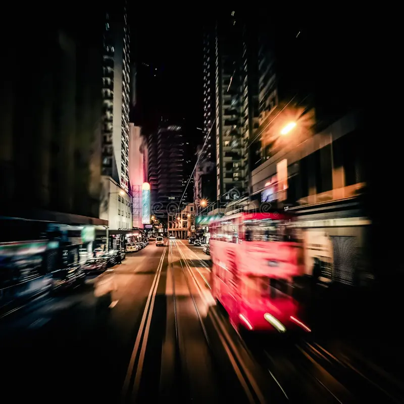

CAADFUTURES 2025: EVENT & SOCIAL Details

Highlights:
- Lavish Cantonese banquet at one of Hong Kong’s most historic dining halls
- Networking opportunity in a relaxed, celebratory setting
- Reserved seating for registered guests and their +1 companions only
Event Details: Date: Friday, 4th July
Time: 6:00PM – 10:30PM
Quota: 250
Cost: HKD 960 Waiting Location: City Hall Map
Notes:
> Banquet tickets are already included for all full conference registrants.
> Additional tickets available for +1 guests only.
> Name of registered participant required for +1 ticket.
> No public sales or walk-ins accepted.

Architecture Tour: M+ Art Museum by Herzog and de Meuron
Inside the Making of a Cultural Landmark
Join HKU Adjunct Assistant Professor Human T.L. Wu for an in-depth architectural tour of the M+ Museum, a major work by Herzog & de Meuron and a defining icon in Hong Kong’s West Kowloon Cultural District.
Highlights:
- Led by HKU Adjunct Assistant Professor Human Wu, who oversaw the M+ project during his time at Herzog & de Meuron.
- Behind-the-scenes insights into design development, materials, and construction.
- Examination of M+ as a cultural landmark, public space, and architectural statement.
- Discussion on the building’s response to local context, waterfront site, and urban visibility.
Event Details:
Date: Saturday, 5th July
Time:
Quota: 30
Cost: HKD 250 (M+ Exhibition Entry Tickets is not included)

Architecture Tour: Unique Typologies – High Density Public Housing
Understanding Urban Density through Repetition and Design
Led by HKU Professor Christian J. Lange, co-author of Cities of Repetition, this guided architecture walk explores the evolution of Hong Kong’s large-scale residential developments.
Highlights:
- Guided by HKU Professor Christian J. Lange, expert on Hong Kong’s housing typologies.
- Exploration of key public or private housing estates developed from the 1960s to early 2000s.
- In-depth discussion on urban density, standardization, and the aesthetics of repetition.
- A critical look at how these mass-produced environments shape urban identity and daily life.
Event Details:
Date: Saturday, 5th July
Time:
Quota: 30
Cost: HKD 250

Architecture Tour: Unique Typologies – Diamond Hill Crematorium
Designing for Remembrance in a City of Density
This exclusive architecture walk explores how public buildings in Hong Kong can respond to complex social and spatial challenges with dignity, clarity, and care.
Highlights:
- Visit key spaces including the Columbarium, Courtyard, and Service Hall (subject to availability).
- Learn how architectural design facilitates respectful rituals in limited urban space.
- Understand the project’s spatial strategies, material use, and integration with the natural landscape.
- Gain insights into how public architecture can support both practical needs and emotional healing.
Event Details:
Date: Saturday, 5th July
Time:
Quota: 30
Cost: HKD 250

Architecture Tour: High Density Urbanism – Wan Chai Temple & Blue House
Exploring Spiritual Heritage and Urban Regeneration
This guided walk takes participants through Wan Chai’s historical layers—visiting sacred sites and community heritage projects that reflect Hong Kong’s unique blend of tradition and modernity.
Highlights:
- Explore Pak Tai Temple, a 19th-century Taoist temple rich in history and craftsmanship.
- Visit Hung Shing Temple, dedicated to the sea god and symbolic of Wan Chai’s coastal heritage.
- Tour the Blue House Cluster, a UNESCO-recognized revitalization project combining living heritage with social housing.
- Engage with themes of preservation, urban identity, and how historic architecture continues to shape daily life in Hong Kong.
Event Details:
Date: Saturday, 5th July
Time:
Quota: 30
Cost: HKD 250

Architecture Tour: High Density Urbanism – Mong Kok & Yau Ma Tei
Exploring Everyday Density and Urban Heritage
This walking tour takes participants deep into the vibrant heart of Kowloon, where hyper-density, layered history, and eclectic architecture collide.
Highlights:
- Navigate commercial streets like Sai Yeung Choi and Fa Yuen for a look at urban retail typologies.
- Visit Langham Place for insights on vertical mall design in a dense city.
- Explore cultural landmarks including Yau Ma Tei Theatre, Red Brick Building, and Tin Hau Temple.
- Examine the adaptive reuse and conservation of the Yau Ma Tei Fruit Market and Shanghai Street.
- Discuss the coexistence of traditional temples, colonial buildings, and modern towers in a compact urban grid.
Event Details:
Date: Saturday, 5th July
Time:
Quota: 30
Cost: HKD 250

Field Trip: Discovering Shenzhen
Exploring Innovation and Urban Transformation in China’s Design Capital
This full-day architecture tour to Shenzhen offers an immersive experience into the city’s cutting-edge design, cultural revitalization, and urban transformation.
Highlights:
- Shenzhen Science & Technology Museum – Designed by Zaha Hadid Architects.
- Marisfrolg Headquarters – A striking example of corporate architecture.
- Nantou City Community Center – Designed by Prof. Chang Yung Ho.
- Cross-border dialogue on urbanism and density between Hong Kong and Shenzhen.
- Curated insights into spatial strategies, façade systems, and public engagement.
- Round-trip shuttle service provided from and back to HKU.
Event Details:
Date: Saturday, 5th July
Time: 7:30PM – 10:30PM
Quota: 49
Cost: HKD 900
Notes:
> Important: Please ensure your passport and visa status allows entry into Mainland China.
> Participants are responsible for meeting immigration requirements.

Highlights:
- All-day excursion through clear waters, forested islands, and geological formations.
- Great for casual networking and relaxation with fellow participants.
- Drinks and lunch included on board.
- Shuttle transport provided from HKU.
Event Details:
Date: Sunday, 6th July
Time: 9:00AM – 7:30PM
Quota: 43
Cost: HKD 960

Evening Tour: Tram Ride – Whitty Street Depot to North Point
A Moving Portrait of Hong Kong’s Architecture
Ride Hong Kong’s iconic tram for a guided journey across the city’s evolving skyline. From historic streets to soaring towers, discover how architecture captures the rhythms of urban life and change.
Highlights:
- Ride on a classic open-top tram reserved for our group.
- Architectural narration as you pass through key districts.
- Experience Hong Kong’s architectural transition in real time.
- Photograph the city from a unique moving perspective.
Event Details:
Date: Saturday, 5th July
Time: 7:30PM – 8:30PM Tickets
Quota: 30
Cost: HKD 250

Evening Tour: Tram Ride – North Point to Whitty Street Depot
A Moving Lens on Hong Kong’s Vertical Urbanism
Hop aboard a classic Hong Kong tram for a guided ride through the city’s architectural evolution. This moving tour offers fresh perspectives on urban density, heritage, and transformation—from North Point’s residential towers to Central’s iconic skyline.
Highlights:
- Ride through Hong Kong’s diverse architectural zones on a curated tram route.
- Guided narration by local architectural experts.
- Great views, thoughtful commentary, and casual social setting.
- Perfect conclusion to a day of conference activities.
Event Details:
Date: Saturday, 5th July
Time: 8:30PM – 9:30PM Tickets
Quota: 30
Cost: HKD 250
Social Event: Gala Dinner (Extra Tickets)
Banquet – Maxim’s Palace
Get one more extra ticket beyond your conference package to join us for the official CAAD Future 2025 Conference Banquet at the iconic Maxim’s Palace. Join us for the official CAAD Futures 2025 Conference Banquet at the iconic Maxim’s Palace, a treasured Hong Kong venue known for its grand interiors and harbor views.